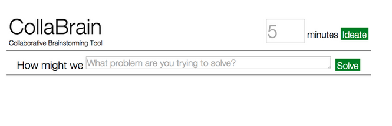
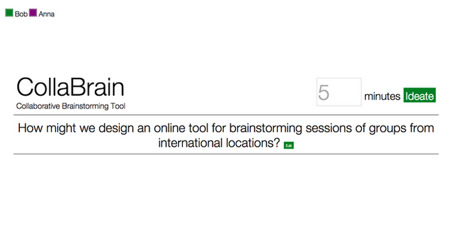
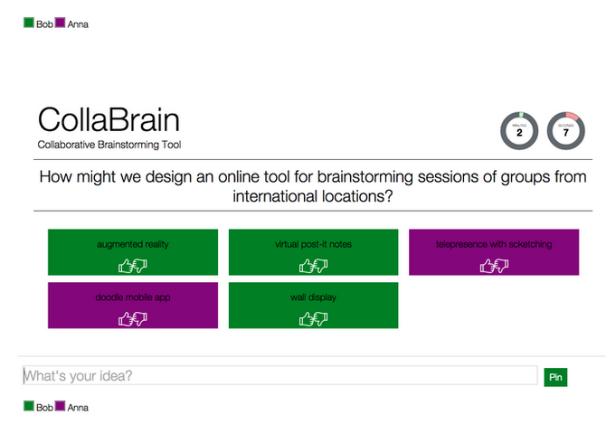
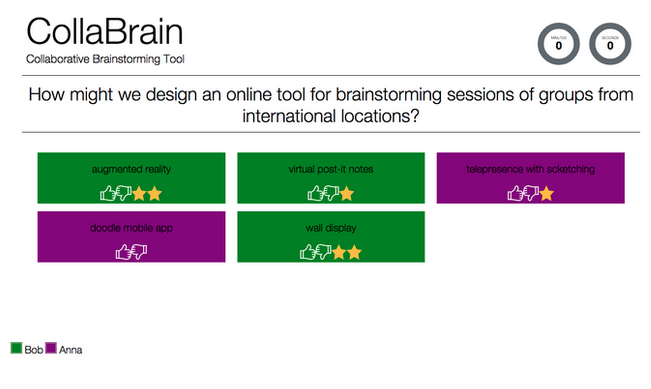

<main class="">
<div class="container">
  <table cellpadding="10">
  <tr>
    <td width="30%" align ="left"> 

      <p> Home Page for CollaBrain</p>
    </td>
      <td width="50%" align ="justify" valign="top"><h2>CollaBrain</h2><p><i>Brainstorming in groups can be a little chaotic when a lot of ideas are thrown on the table even though a moderator facilitates the activity. It’s even harder for the scribe to keep track of the things that have been said – what he writes may not even capture the essence of what was said. These issues have compelled us to develop CollaBrain, an online brainstorming tool that allows multiple participants to collaborate and generate ideas in real-time. 
      The application focuses on the important details that make a brainstorming session productive. The ‘How Might We’ approach to problem solving is taken from IDEO, the Stanford d.School, and other well-known creative organizations to ensure the best wording possible is used and that the right question is asked [1]. The participants then decide how long the session will last. Each can pin their ideas on the idea board within the given timeframe. When the time is over, everyone can vote for the possible ideas they can play around with to find the right solution.
    </td>
  </tr>
  <tr>
    <td width="30%" align ="left">
      <p> Discussion Moderation</p>
    </td>
      <td width="40%" align ="justify" valign="top"><p><i> Defining the topic for brain storming </i>
      Moderator can write and edit the problem statement that the group will be brain storming on. He/she can also define the time-line by which the collaboration dashboard would be active for ideation. Once the problem statement is defined, he/she can invite other collaborators to the brain storming dashboard via sharing the web address with them. 
    </td>
  </tr>
  <tr>
    <td width="30%" align ="left">
      <p> Ideation</p>
    </td>
      <td width="40%" align ="justify" valign="top"><p><i> Ideation Phase</i>
      Collaborators can  pin their ideas by typing it on the lower portion of the application. The ideas appear as post-it notes with the corresponding color of the user. The timer animation on the upper right shows the amount of time left for the current session. 
    </td>
  </tr>
  <tr>
    <td width="30%" align ="left">
      <p> Idea Selection</p>
    </td>
      <td width="40%" align ="justify" valign="top"><p><i> Voting for the best idea/s</i>
      After the ideation phase i.e., once the time set for the brainstoriming phase is elapsed, the collaborators can vote for the other's ideas that they like and wish to explore and discuss further.
    </td>
  </tr>
  
</table>

     
<div data-editable-type="text" id="text_1" class="  " data-force-html-mode="false" data-content-module-unique-id="">

      <p><i>[1] Berger, W. 2012. The secret phrase top innovators use. Harvard Business Review.Retrieved from https://hbr.org/2012/09/the-secret-phrase-top-innovato. </i></p>

    <p><i>This project was done in collaboration with David Jan Mercado.</i></p>    
</div>
    </div>
  </main>